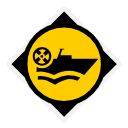

Map
Every location in the region (yellow pins; hover for the name). Drag to pan and zoom with the buttons or the mouse wheel.
Locations38 in total
Grouped by the kind the map filters by; open a group to see its locations. The small line under each name is the type the game shows for it, and safehouse marks a location with a safehouse.
Settlements4
Farms5
Bunkers3
Military bases4

Airports1

Radar stations1

Tourist attractions1
Industry2
Soviet11
 Amurskijj Tigr OutpostSoviet Camp
Amurskijj Tigr OutpostSoviet Camp- Buryjj Medved Base CampSoviet Camp
- Chjornyjj Kaban OutpostSoviet Camp

Landing Zone: AnyaSoviet Hovercraft- Landing Zone: BorisSoviet Hovercraft
- Landing Zone: CalinaSoviet Hovercraft
- Landing Zone: DimaSoviet Hovercraft
- Landing Zone: ElgaSoviet Hovercraft
- Landing Zone: FedyenkaSoviet Hovercraft
- Seryjj Volk Base CampSoviet Camp
- Soviet Recon CampSoviet Camp
Safehouses11
Safehouses are where you can respawn and fast travel to once they are unlocked. See all safehouses for the house photos and the whole map. The coordinates open the interactive map there.
| Safehouse | Location | Coordinates |
|---|---|---|
| Älgstugan |  Älgstugan Älgstugan | -2665, -1844 |
| Anl 118 Färela |  Anl 118 Färela Anl 118 Färela | -2364, -2602 |
| Aspenäs |  Aspenäs Aspenäs | -724, -3759 |
| Borgakulan |  Borgakulan Borgakulan | -2409, -4357 |
| Hemmanskogen Logging Camp | Hemmanskogen Logging Camp | -1864, -2932 |
| Karl-Erik Lighthouse | Karl-Erik Lighthouse | -2910, -3710 |
| Nilssons Marinbygg AB |  Nilssons Marinbygg AB Nilssons Marinbygg AB | -3475, -2829 |
| Norrmyraträsket Camp | – | -1913, -3836 |
| Rusksele | Rusksele | -1004, -3274 |
| Skvadern Command Bunker |  Skvadern Command Bunker Skvadern Command Bunker | -1472, -3190 |
| Stenmyra |  Stenmyra Stenmyra | -1011, -4345 |
Missions6 main · 7 side
13 missions take place in the Marshlands region: 6 main and 7 side missions. See them on the missions page.
Note
The challenge Murky Waters (Truth tree) has 4 tiers here; the last one reads: “Complete the last 3 Main or Side Missions in the Marshlands Region (excluding the mission "The Enemy of my Enemy")”.